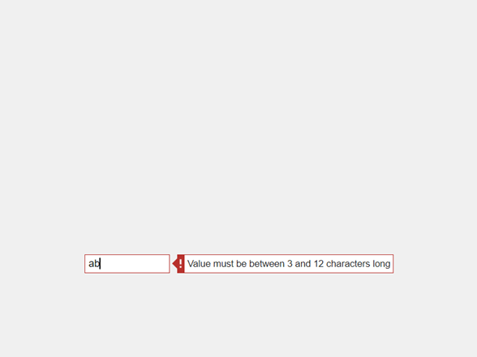

uieditfield
Create text or numeric edit field component
Syntax
Description
ef = uieditfieldEditField
object. MATLAB® calls the uifigure function to create the
figure.
ef = uieditfield(parent)Figure object or one of its child containers.
ef = uieditfield(style)"text" or "numeric".
ef = uieditfield(___,Name,Value)Value
property. Use this option with any of the input argument combinations in the
previous syntaxes.
Examples
Create a text edit field in a UI figure.
fig = uifigure; ef = uieditfield(fig);

Create a numeric edit field by specifying the style as "numeric".
fig = uifigure;
ef = uieditfield(fig,"numeric");
Create a numeric edit field and set its limits to be 0 to 100.
fig = uifigure; ef = uieditfield(fig,"numeric", ... "Limits",[0 100]);

Determine the default value.
val = ef.Value
val = 0
Set the edit field value to 50.
ef.Value = 50;

Create a numeric edit field that allows the app user to enter any value, but always displays the value using exactly two decimal places and the specified units. The edit field stores the exact value that the app user enters.
fig = uifigure; ef = uieditfield(fig,"numeric", ... "ValueDisplayFormat","%.2f Volts");

Type 5.5556 in the numeric edit field, then click outside it. The edit field displays 5.56 Volts.
The edit field stores the value in the Value property as the user-entered value (5.5556). If you click in the edit field again, it displays 5.5556.
For a complete list of supported format display operators, see sprintf.
Create a numeric edit field that allows the app user to enter a value greater than -5 and less than or equal to 10.
fig = uifigure; ef = uieditfield(fig,"numeric", ... "Limits",[-5 10], ... "LowerLimitInclusive","off", ... "UpperLimitInclusive","on", ... "Value",5);
If you type a value in the numeric edit field that is outside the limits, MATLAB displays a message that indicates the problem. If you enter the invalid value, MATLAB restores the value to the previous valid value.

Create a text edit field that allows the app user to enter text that is between 3 and 12 characters long and that consists only of letters and digits.
fig = uifigure; ef = uieditfield(fig, ... "CharacterLimits",[3 12], ... "InputType","alphanumerics");
If you type a value in the text edit field that is invalid, MATLAB displays a message that indicates the problem. If you then enter the invalid value by pressing Enter or navigating away from the component, MATLAB restores the value to the previous valid value.

Create an app that moves a gauge needle when an app user enters a value in a numeric edit field.
In a file named editFieldApp.m, write a function that implements the app:
Create a UI figure and a grid layout manager to lay out the app.
Create a numeric edit field and a gauge in the grid layout manager.
Write a callback function named
editFieldValueChangedthat updates the gauge needle to match the edit field value, and assign the function to theValueChangedFcncallback property of the edit field. For more information about callbacks, see Create Callbacks for Apps Created Programmatically.
function editFieldApp fig = uifigure; gl = uigridlayout(fig); gl.RowHeight = {'1x',150,'fit','1x'}; gl.ColumnWidth = {'1x',150,'1x'}; g = uigauge(gl,"Limits",[0 10]); g.Layout.Row = 2; g.Layout.Column = 2; ef = uieditfield(gl,"numeric", ... "Limits",[0 10], ... "ValueChangedFcn",@(src,event) editFieldValueChanged(src,event,g)); ef.Layout.Row = 3; ef.Layout.Column = 2; end function editFieldValueChanged(src,event,g) g.Value = src.Value; end
Run the editFieldApp function. Enter a value in the edit field to update the gauge needle.
editFieldApp

Create an app that maintains a log of the values that an app user enters into a text edit field and displays that log in a text area.
In a file named logEntriesApp.m, write a function that implements the app:
Create a UI figure and a grid layout manager to lay out the app.
Create a text edit field and a text area in the grid layout manager.
Write a callback function named
editFieldValueChangedthat adds the previously entered text to the text area whenever a user enters new text in the edit field, and assign the function to theValueChangedFcncallback property of the edit field. Access the previously entered text using the callback event data. For more information about callbacks, see Create Callbacks for Apps Created Programmatically.
function logEntriesApp fig = uifigure; g = uigridlayout(fig); g.RowHeight = {'fit','1x'}; g.ColumnWidth = {'1x',150,'1x'}; loglist = uitextarea(g, ... "Editable","off"); loglist.Layout.Row = 2; loglist.Layout.Column = 2; ef = uieditfield(g, ... "Value","Daniela Hendrix",... "ValueChangedFcn",@(src,event) editFieldValueChanged(src,event,loglist)); ef.Layout.Row = 1; ef.Layout.Column = 2; end % Create ValueChangedFcn callback function editFieldValueChanged(src,event,loglist) prev = event.PreviousValue; loglist.Value = [prev; loglist.Value]; end
Run the logEntriesApp function. Enter some names in the edit field. Whenever you enter a new name, the app adds the previous name to the log displayed in the text area.